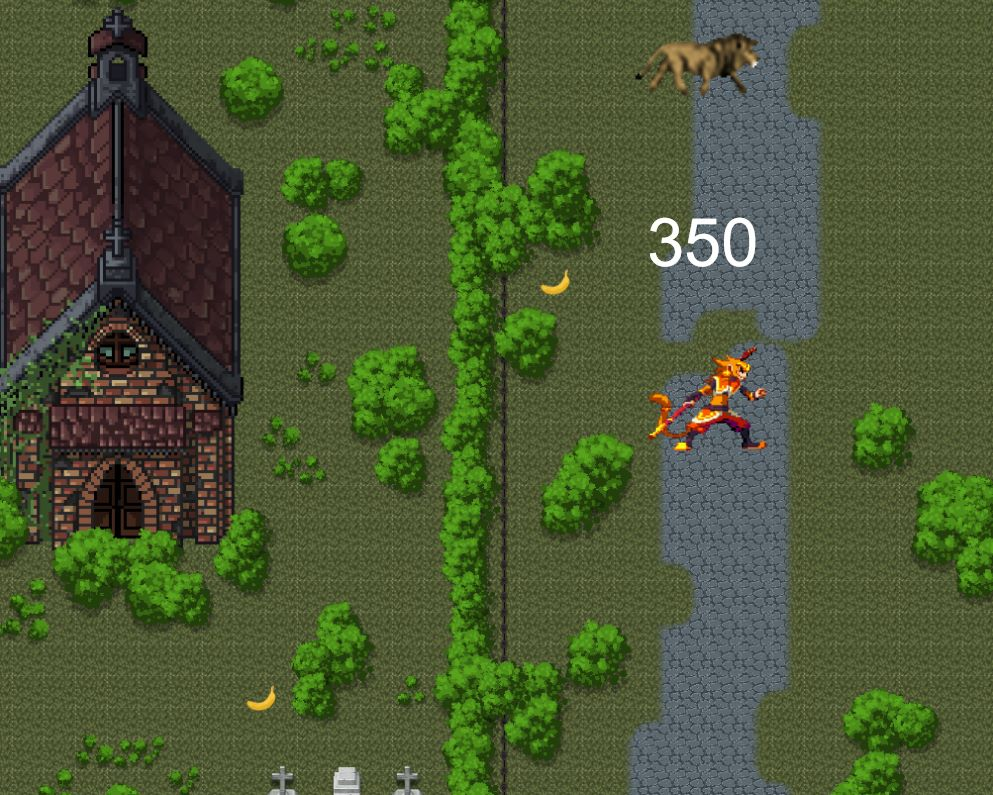
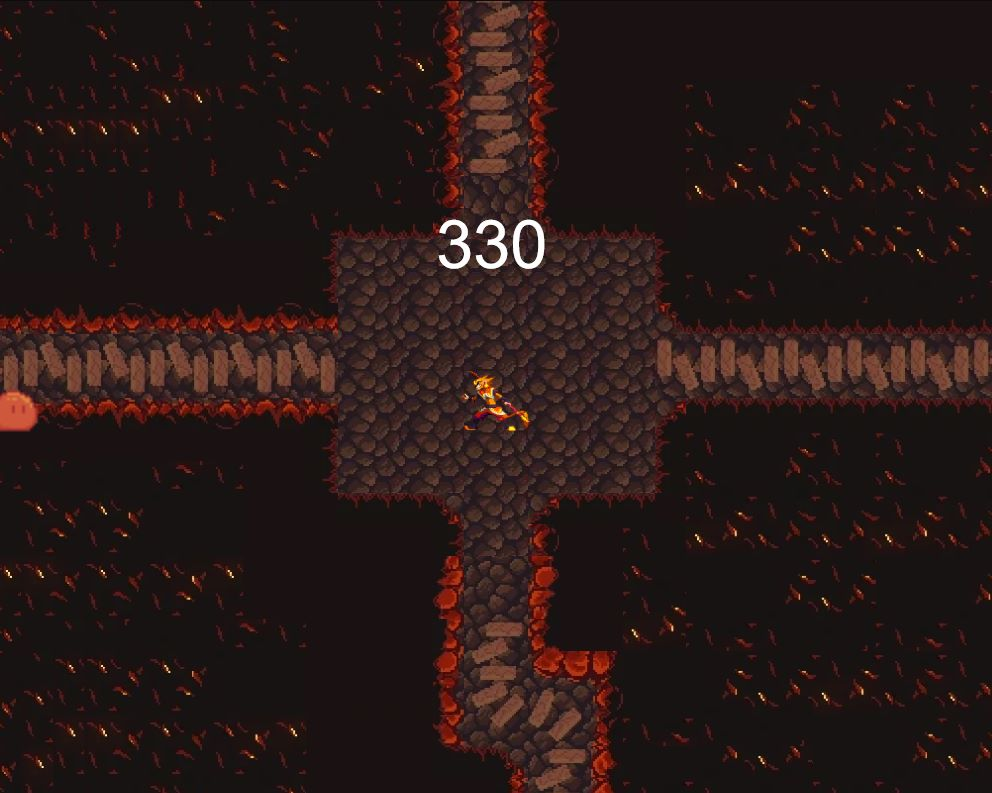
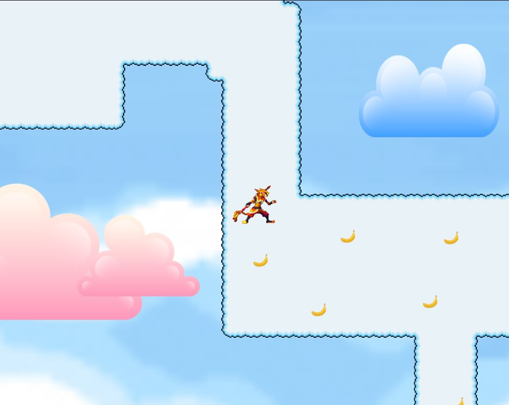
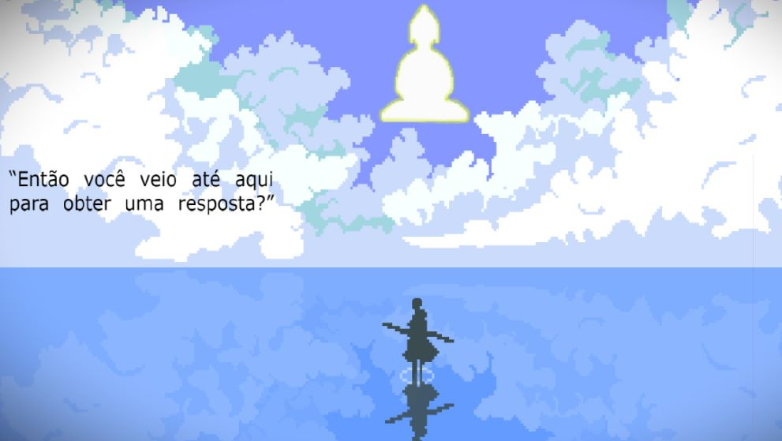

O jogo foi feito usando a ferramenta Construct 3, e foi baseado na tradicional história chinesa "Jornada
ao Oeste". O personagem principal, Kong Wu,
é considerado um rei na montanha em que habita, mas mesmo com todos seus súditos e recursos, ele se sente
vazio. Nosso protagonista parte dessa forma em uma jornada física e espiritual, para encontrar algo que dê
sentido a sua existência.

Ao longo do jogo, o personagem enfrenta diversos inimigos em vários ambientes. Suas aventuras o levam a
conhecer pessoas novas e desafiar oponentes poderosos.


O jogo possuí 3 fases em biomas diferentes, e 2 chefes diferentes. Conforme o jogador avança, o
personagem muda de objetivo e ambição, o levando a diversos lugares. Ao final, Kong Wu alcança o ceu e se
encontra com o todo poderoso Buddha, que inicía uma conversa com o rei macaco. O jogo acaba com uma cutscene
da conversa entre esses 2 personagens, e indica a possibilidade de uma continuação.
